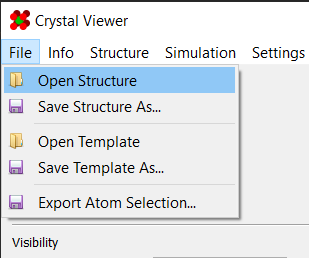
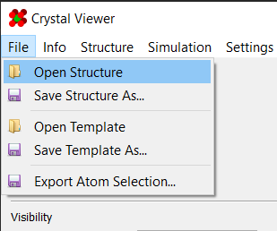
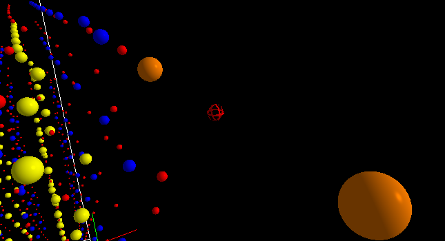
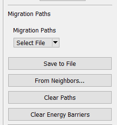
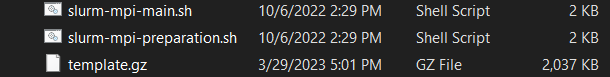

1) Import Structure
Load your structure into the program
 |
|

You should now see the structure in the viewport:
|
This section will guide you setting up, running, and viewing the results of an NEB simulation. For this, the basic steps are:
| Depending on what you set the "division count" to (see here), this may schedule a lot of jobs (one per division)! Make sure you are allowed to schedule that many jobs! |
| Note: this is designed for running on clusters that use the slurm job scheduler, and have LAMMPS installed. |
| Note: by this point, you should already have an annealed structure. More information on annealing structure can be found here. |
Load your structure into the program
 |
|
You should now see the structure in the viewport:
|
It is required to define a starting vacancy. To do so, use the "Mark as Starting Vacancy" tool found in the "Modify" section:
|
Additionally, you may wish to mark other atoms as vacancies, or dope atoms:
 |
As always, more information on these tools can be found in their respective sections.
Go to the "Migration Paths" panel on the right side:
 |
Here, you can either load the migration paths from a file, or you can generate new ones using a proximity-based system. To generate new ones, click on "From Neighbors..." to launch the "Paths From Neighbors" dialog:
|
Enter the parameters that best fit your case. Additionally, several filters are available to determine which paths should be generated. A description of the fields can be found here.
Note that for large structures, it may take a few moments to generate the paths, especially if "Remove Obstructed Paths" is enabled. Once generated, they will, be present as white arrows in the viewport:
|
Go to Simulation > Generate Simulation to launch the simulation
generator dialog:
|
Switch to the NEB simulation:
|
Enter parameters for your simulation. An explanation of all the fields can be found here. Once ready, click "Ok" to generate.
Upload the resulting files to your cluster using the method of your choice (scp, FileZilla, etc.)
To run the simulation, navigate to the directory containing your simulation files and run the command:
| sbatch slurm-mpi-main.sh |
This will run the master job scheduling script. It will first run a pre-minimizer job if it detects one hasn't been run already. If it detects the pre-minimizer has been run (meaning you've run this script before), this step will be skipped. Generally, you will not need to worry about this preparation step.
The master job script will then schedule each division as a separate job. These jobs will first wait for the pre-minimizer to finish before running themselves.
Depending on how many paths you're simulating, it may take some time for them to
complete. Once finished, a final compilation script will run automatically,
compiling the energy barriers into a single table found in
/Compiled Energy Barriers/[NAME] Barriers.csv.
Finally, any paths that failed to run—whether due to convergence issues or
the cluster having a bad day—will be logged to /Missing Barriers/Missing.csv.
This can be loaded back into the viewer as ordinary migration paths.
Once all jobs have finished, download the completed barriers file
from /Compiled Energy Barriers/[NAME] Barriers.csv.
Then, load your structure back in. For convenience, a template file (named
template.gz) was automatically added to the simulation directory
upon initial generation. That way, you can restore the complete initial setup
for reference.
 |
Next, load the energy barriers into the viewer using the "Migration Paths" panel.
|
Now that your barriers are loaded in, it's possible that some of them didn't converge properly. This could skew the energy scale into entirely unreasonable territory:
|
Fortunately, you can use the newly visible energy scale bar to adjust the limits of the range:
|
Additionally, you can toggle "Clip Energy Barriers" to hide any barrier outside
the energy range. This is found under Structure > Clip Energy Barriers:
|